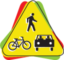
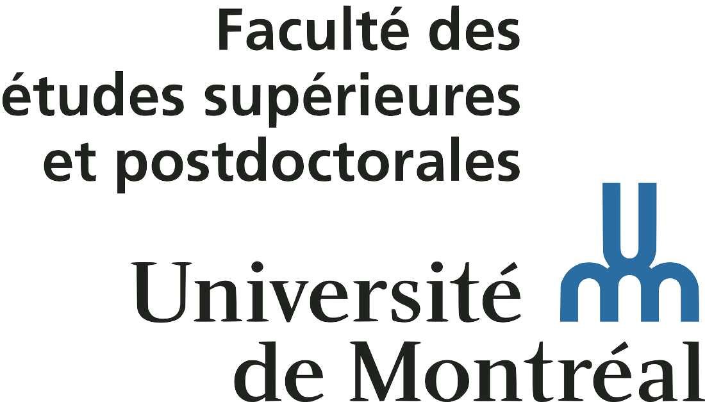
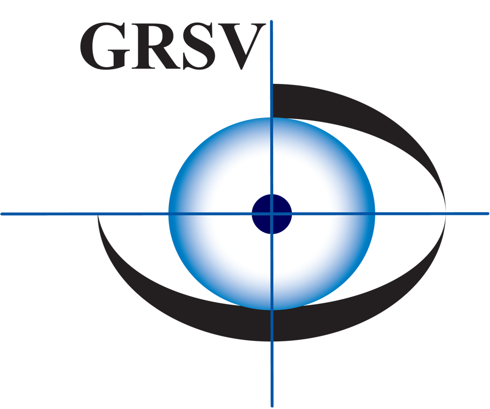

Academics
You can find my full curriculum vitae here (last updated July 2022)
Education
PhD in Cognitive Neuroscience
Nov 2014 - Jun 2018
Université Claude Bernard Lyon 1, France
PhD in Vision Sciences
Nov 2014 - Jun 2018
Université de Montréal, Canada
MSc in Neuroscience
Sep 2012 - Jul 2014
Université Claude Bernard Lyon 1, France
BSc in Physiology
Sep 2009 - Jun 2012
Université Claude Bernard Lyon 1, France
Work Experience
Visiting Researcher
June 2022 - present
Justus Liebig University of Giessen, Germany
Postdoctoral Visitor
May 2020 - present
York University, Canada
Postdoctoral Fellow
Apr 2019 - Apr 2020
École d'Optométrie, Université de Montréal, Canada
Postdoctoral Fellow
Oct 2018 - Mar 2019
Centre de Recherche en Neurosciences de Lyon, France
Teaching Assistant
Sep 2015 - Dec 2015
Université de Montréal, Canada
Fellowships & Awards
Vision: Science to Applications (VISTA) Postdoctoral Fellowship
May 2020 - May 2022
York University, Canada

Postdoctoral Student Award
Jan 2020
Road Safety Research Network (RRSR) of Québec, Canada

Excellence scholarship
Dec 2017
Faculté des Études Secondaires et Postdoctorales - École d'Optométrie de l'Université de Montréal, Canada
Scholarship for end of PhD studies
Sep 2017 - Mar 2018
Faculté des Études Secondaires et Postdoctorales, Canada

Additional funding for students
Jul 2017
Groupe de Recherche en Sciences de la Vision, Canada
Doctoral mobility fellowship
Sep 2015 - Dec 2015
LabEx CORTEX, France
Doctoral mobility fellowship
Jan 2015 - Jun 2015
Programme Avenir Lyon St-Etienne, France
Expertise
| Methods | Motion capture (Optotrak and Optitrack systems), eye-tracking (EyeLink system), electro-oculography, psychophysics, behavioral studies, single-case research, online experimentation |
| Analysis | Hand, head and eye movement kinematics, EOG signal reading, bootstrapping, single-case statistics |
| Softwares | Matlab, R, PsychoPy, Qualtrics, SPSS, Statistica, LaTeX, Adobe Illustrator, CorelDRAW |
Additional Training
| Dec 2017 | Good Clinical Practices (Bonnes Pratiques Cliniques) | Centre d'Investigation Clinique de Lyon CIC 1407, France |
| Jun 2015 - Jul 2015 | CoSMo summer school | Radboud University Nijmegen, The Netherlands |